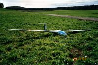
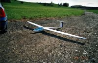

 
2001-02, ASH 26, 3,6m wing span and use the SD7032 as wing profile, flaps, 3,8 Kg weight.
The ASH 26 fuselage was bought, as usual, by Uwe Gewalt in Reutlingen. The wings are home made using a Styrofoam kernel covered with Abachi. Due to the relative slim profile a diagonal carbon fabric was used to glue the kernel material with the covering wood (torsion). As wing servos I am using the Multiplex FL BB Servos which is about 11 mm size height. Used for the flaps the servos completely build in the wing and there is no step in the surface. This is not the case for the servo used for the aileron, the trailing edges of the servo cover is about 1 mm higher as the wing surface.
The glider reacts heavy on thermals and will circle easy with used flapperons. Due to the gliders weight the glider can be used up to 20 km/hrs wind velocity.
The wing plan was drawn using the free 2D CAD Program Solid Edge (ASW26_Fluegel.pdf).